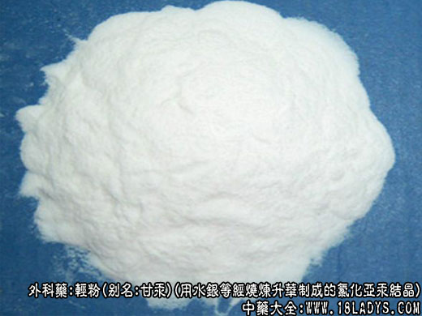

别名：甘汞
来源：系用水银（汞）、皂矾（硫酸亚镁）、食盐（氯化钠）为原料经烧炼升华制成的氯化亚汞结晶。
产地：主产于湖南湘潭、湖北武汉、云南昆明、四川重庆以及天津等地。
加工方法：各地方艺不尽统一，今简介天津市方艺如下。
处方：水银3.5kg，食盐3.5kg，皂矾3.75kg。
工艺：先将食盐、皂矾分别粉碎，置盆内加入适量清水，第一次烧炼酌加适量红土作为成形的辅料，再烧时则以上次升华后的部分剩余物压碎，继续作成形的辅料使用。拌合后，兑入水银继续搅拌，至水银与食盐、皂矾、红土混合均匀，用手抓起成团，放手自然分开，不粘不散为宜。分成十等分，放置于铛状平底锅中，做成凸形圆堆，使表面光滑平整，四周洁净，扣上缸盔，外面用潮润的细砂土地密封。
用特制煤炉，每炉约盛煤球4.5kg，点燃后将煤球捅实，待煤球燃红后，将锅移至火上（电炉亦可）。锅底中心与火口对准，中间距约4毫米，而后将炉房密闭，使之自然烧炼。8小时后打开炉房，将锅取下。放冷后，铲去封口细砂土地，取下缸盔，用鸡翎轻轻将缸盔内及平底锅上的升华物扫下即成。
性状鉴别：本品为白色雪花状结晶片，有光泽，无气，无味。不溶于水、酒精、醚，能溶于硝酸、盐酸，遇氨水则变为黑色。加热至383°C则气化挥散。如久与日光接触，则变为灰黄色，并逐渐还原析出水银。
以片大，体轻，色白，有光泽，少碎粉者为佳。
主要成分：含氯化亚汞。
药理作用：
（1）抗真菌。实验证明轻粉对堇色毛癣菌等多种皮肤真菌有抑制作用。
（2）抗螺旋体。轻粉对梅毒螺旋体不能直接杀灭而仅有微弱的抑制作用，但可增加病人的抗病力，使梅毒病损的皮疹消退，肿大的淋巴结缩小。但由于轻粉有毒性，治疗梅毒已为砷制剂等所代替。
（3）泻下。轻粉内服到小肠后，一部分可变为可溶性汞盐，刺激小肠加强蠕动，促进肠液分泌而泻下通便。
（4）利尿。轻粉有抑制肾小管重吸收的作用，内服后能利尿逐大，特别在尿液呈酸性反应时，利尿作用更明显。对于心性水肿较适用；对肝硬化性水肿则效果不确；而对肾性水肿因其刺激肾脏，故禁用。
炮制：研细粉，生用。
性味：辛、寒、有毒。
归经：入大肠经。
功能：杀虫、消积、泻下利尿、祛痰、生肌。
主治：疥癣疮癞、梅毒、水肿、膨胀、痰涎积滞等症。
临床应用：（1）用于治疗化脓性皮肤感染性疾病，如疮疡、疥癣等。溃烂创面分泌物多时，可用轻粉配青黛、煅石膏，黄柏等，研细末，外渗创面，有解毒消炎作用；对于溃疡面分泌物已减少，但愈合缓慢者，可用轻粉配以珍珠，冰片等，制成八宝丹，外擦患处，以促进生肌收口。如创面肉芽过长，防碍排脓和创口愈合时，可用轻放1.5g，冰片0.9g乌梅肉（煅存性）、月石各4.5g，研为极细末，外擦创面上，可减少肉芽过长，加速愈合。
（2）治疗水肿便秘，由心脏病引起的四肢浮肿，腹水，大便秘结而形气俱实时，可用内含轻粉的舟车丸内服，有利尿通便作用。但体虚气弱者慎用。
用量：外用适量，内服0.15-0.18g。
使用注意：本品内服过量可引起汞中毒，故应防止过量，并应用为丸剂或装于胶囊，服后决意漱口，以防口腔糜烂。
处方举例：
八宝丹：轻粉、象皮、龙骨、琥珀各4.5g，珍珠3g，炒甘石9g，牛黄1.5g，冰片0.9g，研极细末，外掺患处。
注：现代制药工业制炼氯化亚汞的方法。
（1）升华法：将硫酸汞15份与汞10份混合，使之成为硫酸亚汞，加食盐3份，混合均匀，升华即得。
（2）水溶法：将硝酸亚汞10份和硝酸1.5份，与蒸镏水88.5份混合，加入食盐3份的水溶液，即得氯化亚汞沉淀。倾出上层清液，再用蒸馏水反复洗涤沉淀物，至无氯离子反应为止。
过滤、避光、微温干燥即成。
（3）上述第一法制得之成品，呈结晶状，与中药传统方法制得之轻粉相似，多供外用。
附：黑砂
来源：是升练轻粉过程中的副产品。
生成情况：在升炼轻粉时，缸盔的内壁四周，逐渐生成一层锅巴状或水锈样物质，扫轻粉时扫刷不下。每升一次轻粉，则增厚一次，缸边尤厚。到一定时期，用木棒敲击缸盔，震动结巴，使之断裂与缸壁脱离或用铁铲铲下，即为黑砂。
性状鉴别：本品呈不规则的片块状，大小薄厚不一，薄者如纸，缸边有时厚达1厘米。
表面呈灰色，断面呈棕灰色，略显粗糙，如砂粒状集结，断面有星点状光泽。气无，味淡。
效用：与轻粉相同，用于治疗红伤，止血愈合，效果甚好，能防止伤口感染发炎。